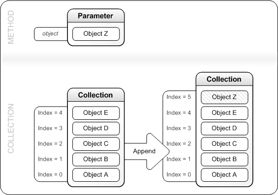
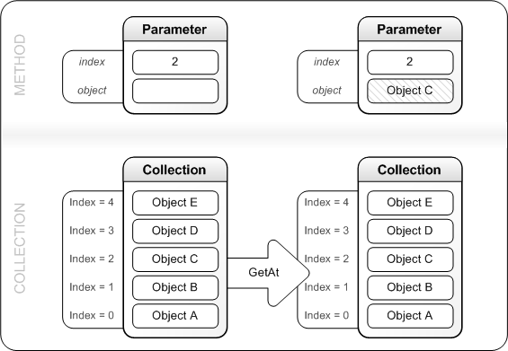
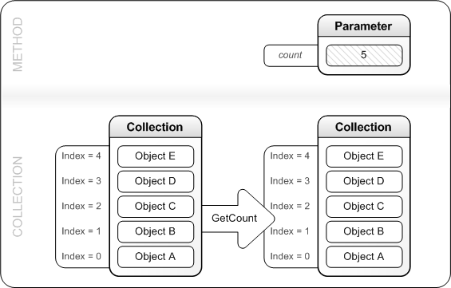
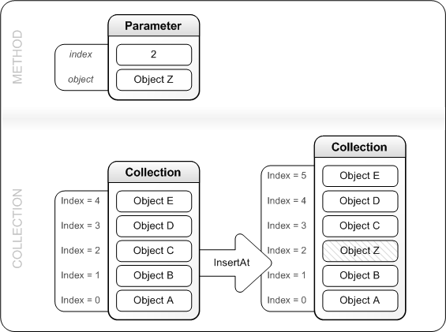
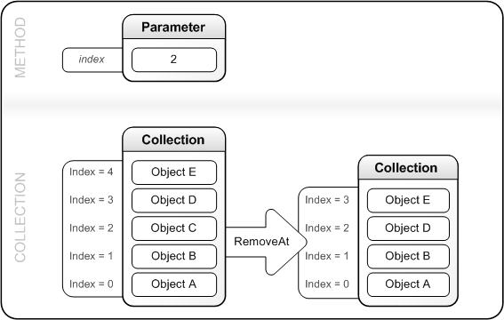
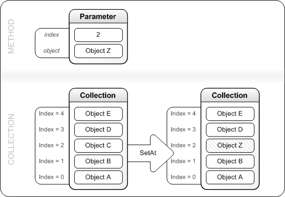

Describes how to use the common methods of the collection interfaces.
The methods described in this section are shown in the list that follows. Not all collection interfaces support each of these methods, and some interfaces also support methods that are not described on this page. For the list of methods supported by a specific interface, refer to the description of that interface's description.
Append Method
GetAt Method
GetCount Method
InsertAt Method
RemoveAt Method
SetAt Method
Appends an object to the end of the collection.
Generic Syntax
HRESULT Append(
[in] Object *object
);
Description
To the end of the collection, this method appends an object that is passed in the parameter list, as shown in the following diagram.

Gets an object from a specified location in the collection.
Generic Syntax
HRESULT GetAt(
[in] UINT32 index,
[out, retval] Object **object
);
Description
Writes the object that is stored at the collection's location specified by index to the variable referenced by object. This action does not change the collection's contents. The following diagram illustrates this process.

Gets the number of objects stored in the collection.
Generic Syntax
HRESULT GetCount(
[out, retval] UINT32 *count
);
Description
Writes the number of objects that are currently stored in the collection into the variable referenced by count. This action does not change the collection's contents. The following diagram illustrates this process.

Inserts an object at a specified location of the collection.
Generic Syntax
HRESULT InsertAt(
[in] UINT32 index,
[in] Object *object
);
Description
The object that is passed in object is inserted into the collection at the location specified by index. Before inserting the new object, this method moves by 1 the object that has previously occupied the location at index and moves all interface pointers subsequent to index. The following diagram illustrates this process.

Removes the object from a specified location in the collection.
Generic Syntax
HRESULT RemoveAt(
[in] UINT32 index
);
Description
This method releases the object from the location specified by index, then compacts the collection by reducing by 1 the index of each pointer subsequent to index. The following diagram illustrates this process.

Replaces the object at a specified location in the collection.
Generic Syntax
HRESULT SetAt(
[in] UINT32 index,
[in] Object *object
);
Description
This method first releases the object at the location referenced by index, then replaces that object with the one that is passed in object. The following diagram illustrates this process.

IXpsOMColorProfileResourceCollection
IXpsOMDashCollection
IXpsOMDocumentCollection
IXpsOMFontResourceCollection
IXpsOMGeometryFigureCollection
IXpsOMGradientStopCollection
IXpsOMImageResourceCollection
IXpsOMNameCollection
IXpsOMPageReferenceCollection
IXpsOMPartUriCollection
IXpsOMRemoteDictionaryResourceCollection
IXpsOMSignatureBlockResourceCollection
IXpsOMVisualCollection
IXpsSignatureBlockCollection
IXpsSignatureCollection
IXpsSignatureRequestCollection
Â
Â